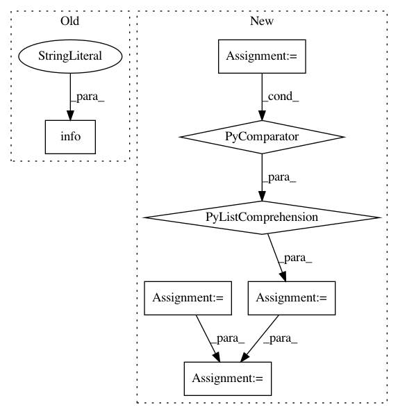

b3677ae2936d0457cb8c6213ea83bd89610eb3f0,official/vision/image_classification/optimizer_factory.py,,build_learning_rate,#Any#Any#Any#Any#,339
Before Change
decay_rate=decay_rate,
staircase=params.staircase)
elif decay_type == "piecewise_constant_with_warmup":
logging.info("Using Piecewise constant decay with warmup. "
"Parameters: batch_size: %d, epoch_size: %d, "
"warmup_epochs: %d, boundaries: %s, multipliers: %s",
batch_size, params.examples_per_epoch,
params.warmup_epochs, params.boundaries,
params.multipliers)
lr = learning_rate.PiecewiseConstantDecayWithWarmup(
batch_size=batch_size,
epoch_size=params.examples_per_epoch,
warmup_epochs=params.warmup_epochs,
After Change
staircase=params.staircase)
elif decay_type == "stepwise":
steps_per_epoch = params.examples_per_epoch // batch_size
boundaries = [boundary * steps_per_epoch for boundary in params.boundaries]
multipliers = [batch_size * multiplier for multiplier in params.multipliers]
logging.info("Using stepwise learning rate. Parameters: "
"boundaries: %s, values: %s",
boundaries, multipliers)
lr = tf.keras.optimizers.schedules.PiecewiseConstantDecay(
boundaries=boundaries,
values=multipliers)
elif decay_type == "cosine_with_warmup":
lr = learning_rate.CosineDecayWithWarmup(
batch_size=batch_size,
total_steps=train_epochs * train_steps,
In pattern: SUPERPATTERN
Frequency: 3
Non-data size: 7
Instances
Project Name: tensorflow/models
Commit Name: b3677ae2936d0457cb8c6213ea83bd89610eb3f0
Time: 2020-08-05
Author: allencwang@google.com
File Name: official/vision/image_classification/optimizer_factory.py
Class Name:
Method Name: build_learning_rate
Project Name: home-assistant/home-assistant
Commit Name: bfb5089ed59f1df8cf53a3b517ac6b091f539a26
Time: 2015-03-08
Author: andyt05@gmail.com
File Name: homeassistant/components/device_tracker/nmap_tracker.py
Class Name: NmapDeviceScanner
Method Name: _update_info
Project Name: tensorflow/models
Commit Name: 9ed4356f5b0e6a8029046b57f1a0c737135e10d8
Time: 2020-08-05
Author: allencwang@google.com
File Name: official/vision/image_classification/optimizer_factory.py
Class Name:
Method Name: build_learning_rate